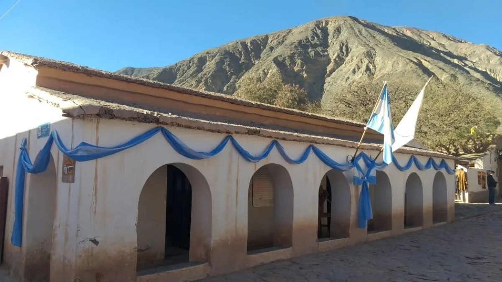
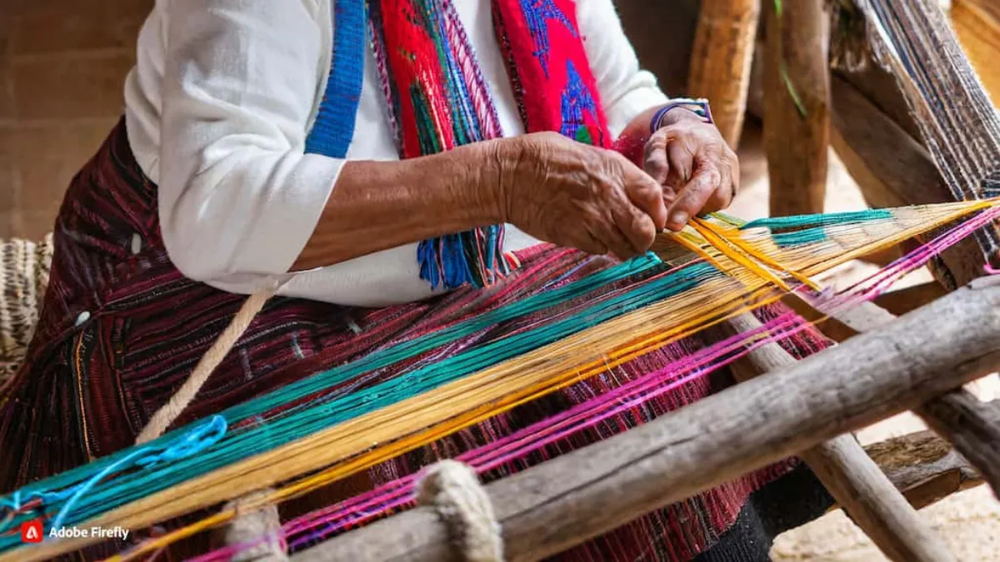
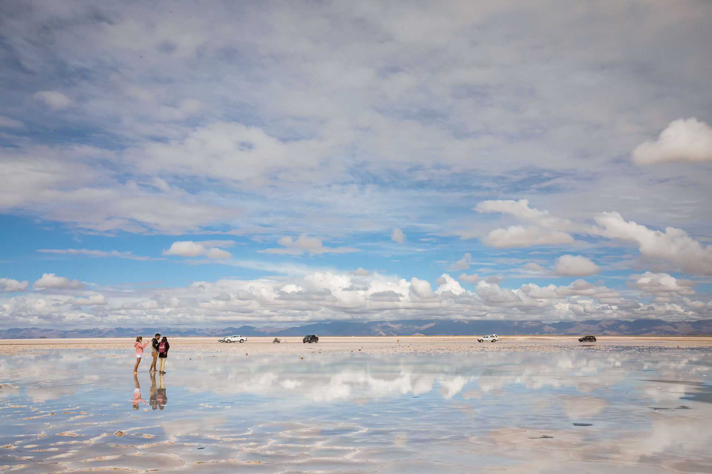
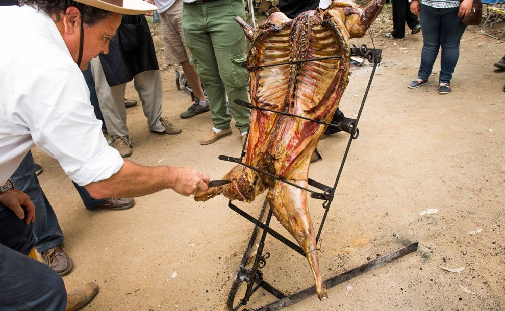

Un Pueblo de Ensueño Es un lugar de sueños, rodeado de múltiples colores y una fantasía hecha realidad. Su nombre tiene origen aymara: “Purma”, que significa campo sin sembrar o tierra en el desierto, y “marca”, que quiere decir pueblo. De ahí proviene su bello significado: “Pueblo de la Tierra Virgen” o “Pueblo en el Desierto”. Reconocido y elogiado por su incomparable belleza, Purmamarca es considerado uno de los pueblos más bellos de la Argentina.
¿Comó se llega?
En auto: Por la Ruta Nacional 9 (desde Salta o Tucumán viaja por la quebrada) y RN34 (desde Córdoba o Buenos Aires). También puede accederse desde Chile vía el Paso de Jama (RN52).
En colectivo: Hay servicios regulares desde San Salvador de Jujuy (terminal de ómnibus) a Purmamarca. Empresas como Evelia y Balut suelen ofrecer boletos, aunque cabe notar que algunas líneas dejan pasajeros en el “Cruce” (a unos metros del pueblo).
En avión: El aeropuerto más cercano es el de San Salvador de Jujuy. Desde allí se toman colectivos (p.ej. Evelia) o taxis hacia la Quebrada. El viaje por carretera dura unas 1-2 horas.
Actividades que se pueden hacer
- Cerro de los 7 colores 
- Cabildo 
- Talleres textiles 
- Salinas grandes

Gastronomia
Tiene una gran variedad de riqueza grastronomica, como cultural. Teniendo platos como:
El locro es uno de los guisos tradicionales de la zona como a su vez
de toda la Argentina. Se prepara con una base de de maíz, porotos, zapallo y carnes
Es un plato hecho a base de pasta de maíz en chala y mazamorras (sopa espesa de maíz y leche).
La carne de llama es un plato tipico de la zona norte de la provincia
siendo su carne bien valorada y rica para consumir en asado o en estofado
Es como una especie de miel que se usa principalmente para consumir con cosas dulces. Dandole lygar a un postre tipico de arrope copn quesillo